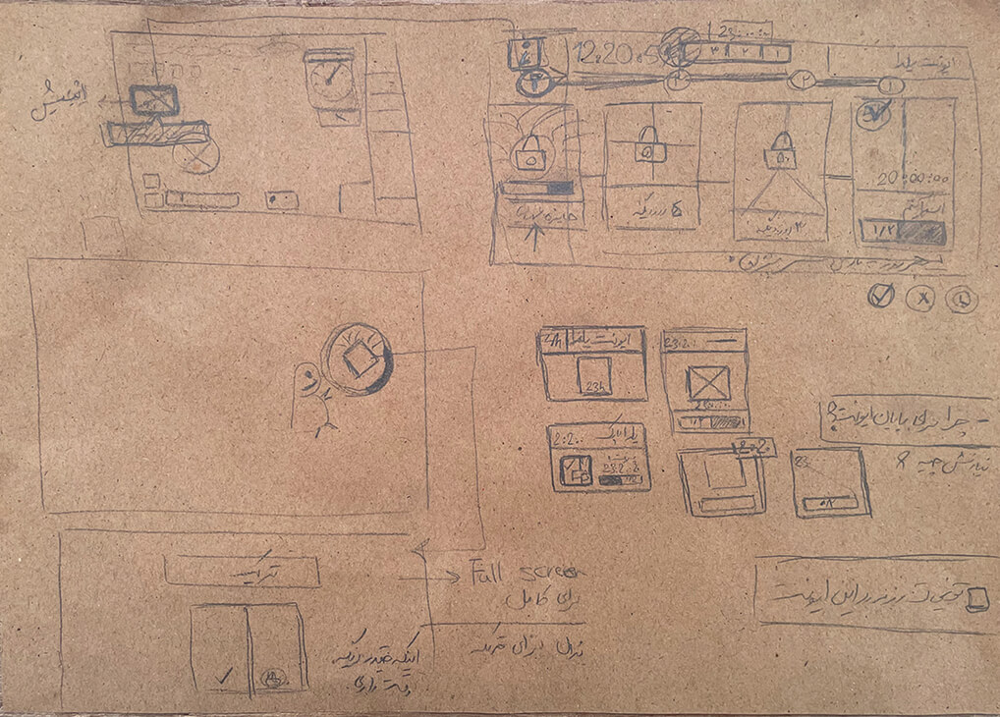
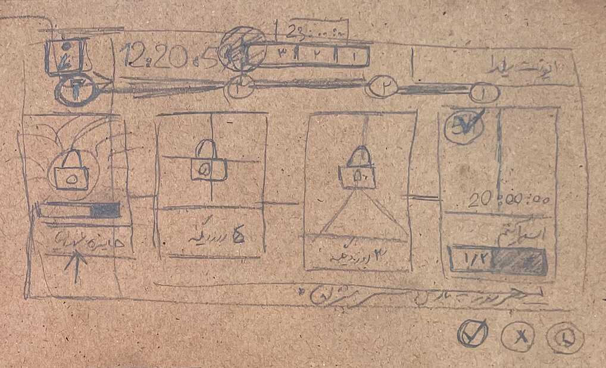
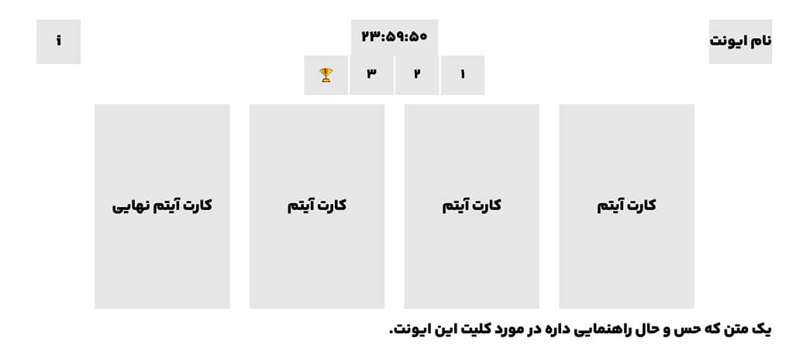

Matin Abbaspour · Product Design Case Study · Winter 2025
Improving retention through a time‑based collection event
Parke Azadi is a social multiplayer game built for group play and shared experiences. It targets a young audience (~13–19) and runs as a live product, where engagement, retention, and monetization are tightly connected.

The Problem
ContextHigh engagement, low retention
Players enjoyed each session but lacked motivation to return consistently and stay invested over time — a missing system for repeated play and long-term commitment, especially for a young audience.
Improving retention would support the business, since retained players consistently showed higher engagement over time.
Constraints & Insights
ForcesThree forces shaped every decision — what the tech could support, what the data already showed, and how much time we had.
- Live multiplayer game with a growing player base, on not-yet-scaled infrastructure
- Some behavioral fixes needed backend migration, limiting rapid change
- Unity called for lightweight, low-dependency solutions
- Analytics revealing retention drop-offs and usage patterns
- User research into what motivates a younger audience
- Pressure to improve retention within a short timeframe
- Little room for long dev cycles or large experiments
- A focus on fast iteration and practical impact
Design Decisions & Experiments
The Yalda EventBringing players back across multiple days to collect shards toward a meaningful reward would lift short-term retention.
The mechanic
A 10-day event: players explore the park collecting shards — 2 unlock the first prize, 3 the second, 4 the third. Collecting them all wins the final high-value reward. The fixed window creates a gentle loss-aversion pull, and no purchase is required, keeping it right for a younger audience.
Structure shown in the visual language of the shipped event panel.
- Strong sense of progression
- Clear communication of the concept
- Loss aversion as a return driver
- No purchase requirement

Collaboration
ProcessAligning early, before code
Early sketches and wireframes aligned the team, surfaced technical constraints, and simplified implementation before development began.
- Partnered closely with PM and developers throughout
- Shared early sketches to align and surface constraints
- Resolved open questions early to simplify build
- Fixed critical issues before release
- Caught usability problems via internal testing
- Planned post-launch refinement on real feedback
- Reused existing assets wherever possible to cut dev effort and speed delivery




Under time pressure, usability testing was limited to internal participants unfamiliar with the feature. We shipped with known UX risk and closely watched support tickets and behavioral data post-release. That feedback became next-sprint tasks — though the event hasn't been re-run, so those improvements aren't yet re-measured.
Outcomes
Impact| Baseline | D1 lift | D7 lift |
|---|---|---|
| Summer peak — strongest natural season | +1.3pp | +1.53pp |
| School-start dip | +3.4pp | +1.88pp |
| 10 days pre-event — cleanest baseline | +7.96pp | +5.37pp |
Why three baselines: one before/after comparison can mislead, so lift was checked against summer (the strongest natural season), the school-start dip, and the 10 days pre-event. Lift held even against summer — suggesting the effect wasn't merely seasonal.
| Task | Active | Started | Completed of started |
|---|---|---|---|
| 1 — Pet | 10,347 | 45.2% | 39.7% |
| 2 — Temporary duo emote | 11,354 | 47.2% | 28.4% |
| 3 — Yaldak character | 14,286 | 47.2% | 19.3% |
About half of active users entered the first task — a healthy entry rate. The gradual drop-off across more demanding tasks is expected, with no unusual friction.
The event gave away four free cosmetic items, so revenue was watched as a guardrail. It held steady with no meaningful dip — the LiveOps ran without harming the game's economy. A health check, not a monetization result: it wasn't measured for revenue growth, only the absence of harm.
Learnings
Reflection
- Design features with clear measurement hooks from the start
- Ensure post-release follow-ups, even with limited tooling
Imperfect data is unavoidable — but naming the measurement gaps early leads to stronger product decisions.
Product design isn't only about designing features — it's about validating hypotheses. Some experiments delivered measurable results; others revealed gaps in our process rather than problems with the ideas.